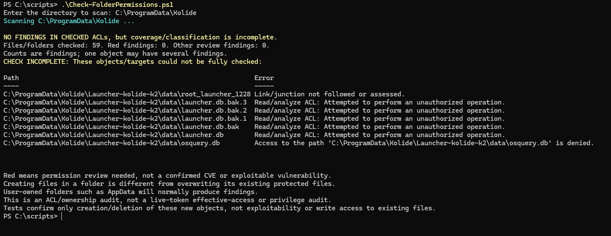
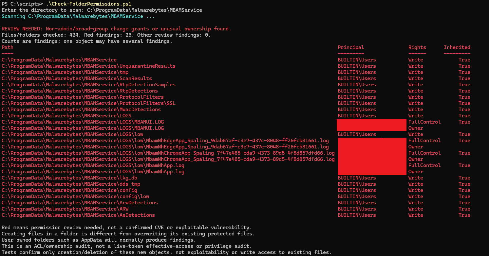
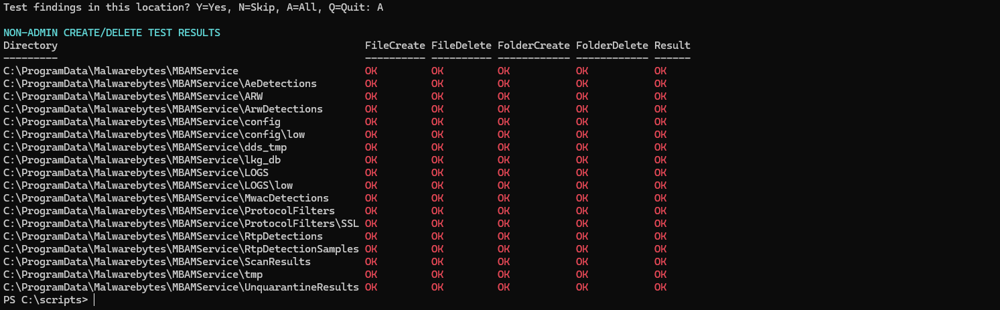
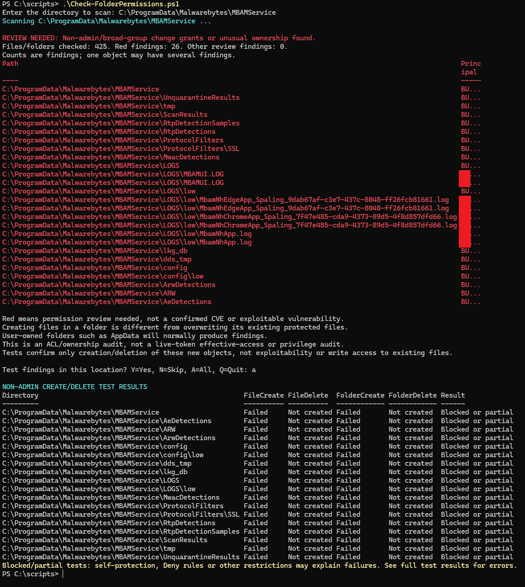

Endpoint Agent Checks and Permission Validation
Spaling Advisory reviewed an export from the Kolide posture-assessment agent and its installer after Malwarebytes blocked activity involving the Windows C# compiler. Embedded Wi-Fi discovery code and local logs suggested a possible source of compiler activity, without establishing what invoked it. A later compilation attempt during permission-script development demonstrated that known benign code could trigger the same detection.
Executive summary
Spaling Advisory reviewed an export from the Kolide posture-assessment agent and its installer after Malwarebytes blocked activity involving the Windows C# compiler. Embedded Wi-Fi discovery code and local logs suggested a possible source of compiler activity, without establishing what invoked it. A later compilation attempt during permission-script development demonstrated that known benign code could trigger the same detection. A separate permission check showed why listed Windows permissions need practical validation: test files and folders could be created and deleted with Malwarebytes self-protection disabled, but creation was blocked after it was enabled.
Inspect what the agent collects
The starting point was a contractual requirement to install the Kolide posture-assessment agent before accessing an organization’s internal resources.
The Kolide post-assessment contained 20 device inventory files and 27 security checks. Inventory included hardware, operating system details, drivers, local accounts, network interfaces, listening ports, startup items, certificates and browser extensions. Checks covered updates, encryption, antivirus, firewall, screen lock and other security settings.
Some checks looked for sensitive material stored without encryption, including SSH keys, recovery codes and a 1Password emergency kit. Their results contained blank identifying fields and PASS statuses. The presence of a product-specific check did not establish that the product was installed.
No document contents, keystrokes or browsing-history records appeared in the export. That describes this export, not every capability available to the product. Kolide’s April 2021 Privacy Center post describes device-data collection details, completed live queries and scheduled-query visibility. [1]
Follow the compiler activity
Malwarebytes reported Exploit.T1059Execution against csc.exe in the Windows .NET Framework directory. The application path was consistent with Microsoft’s C# compiler. The alert described a behavior rule, rather than identifying a particular malicious program. Malwarebytes documents the detection as protection against abuse of PowerShell utilities. [2] In ATT&CK, T1059 is the parent Command and Scripting Interpreter technique; PowerShell is sub-technique T1059.001. [5]
The anti-exploit alert came from the Windows device being assessed; the separate inspection of the supplied Kolide MSI was static and did not involve execution. The record does not establish whether the installed agent service, a separately invoked launcher or another caller initiated the Wi-Fi function. The MSI bundled Kolide Launcher 2.5.0.0 and osquery 5.22.1, with configuration for a background service and automatic updates. Extracted certificate information named Kolide, Inc. for the MSI and launcher. Full signature trust and revocation validation were outside this inspection; certificate identity alone was not treated as proof of safety.
The launcher executable contained a PowerShell function for scanning nearby Wi-Fi networks. The code compiled a helper and then used its NativeWifi interface:
Add-Type -Path ".
ativewificode.cs"
$WlanClient = New-Object NativeWifi.WlanClientThe surrounding code requested a scan and returned nearby network information, including SSIDs and BSSIDs. Finding that capability in a binary did not establish that the organization collected those results.
Microsoft documents that Add-Type compiles supplied source code into a .NET assembly. [3] That made compiler activity a concrete lead. The Malwarebytes service log then recorded this sequence:
| Time | Recorded event |
|---|---|
| 21:44:05 | Reference to NATIVEWIFICODE.CS in a temporary nativewifi directory |
| 21:44:05 | Malwarebytes attached its protection to PowerShell |
| 21:44:07 | csc.exe activity blocked; powershell.exe identified as its parent |
The helper filename and timing were consistent with the Wi-Fi function found in the launcher. PowerShell was recorded as the compiler’s parent, but its own parent and full command line were absent. This supported a hypothesis about the execution path, not attribution to routine agent operation or proof of what launched the original event.
An odd field, C:\MACHINE:IX86, appeared as the blocked filename. It resembles a fragment interpreted as a path, but that is speculation. The field did not establish that a malicious file with that name existed.
Reproduce the behavior with known code
During development of a unrelated permission checker for different engagement Spaling Advisory is involved in, a C# helper compiled through Windows PowerShell triggered the same T1059 compiler block. PowerShell then reported that the expected temporary DLL was missing. The timing and log entry connected that failure to the blocked compilation. A 2013 Microsoft-hosted PowerShell blog post by guest author Matt Graeber notes that Add-Type writes temporary files to disk and invokes csc.exe to compile C#. [6] In Windows PowerShell, Add-Type’s in-memory assembly is produced through a compilation process that writes temporary files. Reproduction established a mechanism for this known event. It did not establish the source of the original alert, demonstrate that all Add-Type use triggers the rule, or make unrelated PowerShell alerts benign.
Build a repeatable permission audit
Inspecting an installed security agent raised a familiar question: could an ordinary user change something that privileged software later trusted? A writable executable, configuration file or code-loading directory can become part of a privilege-escalation chain. A broad permission grant is a lead; the software’s use of the affected object determines the impact.
Checking individual properties dialogs did not scale. Spaling Advisory developed a PowerShell script that accepts a directory and walks its files and subdirectories, including hidden items. It records the path, account or group, granted rights and inheritance in a compact results table.
The review expanded beyond BUILTIN\Users to inspect every account or group named in the ACL. Expected administrator and system grants were suppressed from routine findings. Broad groups and local non-admin accounts with change rights were highlighted. Other or unresolved identities remained visible for review. Ownership outside the expected administrator and system identities was recorded separately.
The audit sought grants for creating or overwriting data, appending, deletion, changing permissions and taking ownership. The script explicitly flags applicable Allow entries granting FILE_DELETE_CHILD on directories to identities outside its expected privileged set, describing the capability as deleting children potentially despite their own ACLs. A missing or null ACL was flagged separately. Inherited grants were included. Unreadable objects and skipped link targets remained visible so an incomplete scan could not silently become a clean result.
A more ambitious version attempted Windows authorization and privilege analysis but introduced compilation and elevation dependencies. The final workflow returned to ordinary ACL and ownership inspection, with optional practical tests. It did not claim to calculate every user’s effective access or account for every runtime protection.
The scan of C:\ProgramData\Kolide checked 59 objects and reported zero findings. Coverage was incomplete: one link or junction was skipped, five database ACLs could not be read, and access to osquery.db was denied. This is not a clean result for the entire directory tree.

Figure 1 Kolide scan output including the incomplete coverage warning. No create/delete tests were offered because the checked ACLs produced no findings.
A writable folder does not mean every file inside it can be changed
The permission scan raised a practical question: could a regular Windows user change files used by Malwarebytes? One run checked 394 files and folders in the Malwarebytes service data directory and returned 29 findings. A finding was a permission or ownership entry worth reviewing. Some files appeared more than once, so this was not a count of 29 vulnerable files.
The screenshot run checked 424 objects under C:\ProgramData\Malwarebytes\MBAMService and produced 26 findings: 18 inherited Users Write grants on directories, plus eight log-file rows covering four files with both FullControl and Owner findings. This is a separate run from the earlier 394-object example. These are permission and ownership findings, not a count of vulnerabilities.

Figure 2 Upper portion of the Malwarebytes capture. Red identifies permissions requiring review; it does not establish exploitability.
The ScanResults folder provided a useful example. Windows listed the Users group as having Write permission on the folder. But an existing JSON file inside it listed only Read and execute for that group. The folder permission did not give Users permission to edit that file.
| What the scan showed | What still needed testing |
|---|---|
| Users had Write permission on the ScanResults folder. | Could a regular user actually create a new file there? |
| Users had Read and execute on an existing JSON file. | Could that existing file be changed or replaced? The folder’s Write permission did not answer this. |
These are different actions. Being able to create a new file in a folder does not prove that you can edit a file already there. Even creating and deleting your own test file proves only that those actions worked on your test file.
Replacing an existing file needs a separate check. A user might be able to delete it and put a new file in its place without having permission to edit the original. Windows can allow deletion through a permission on the file itself or a separate permission on the containing folder that allows deletion of files inside it. Other restrictions can still block the action. [7]
The technical name for that folder permission is FILE_DELETE_CHILD, called DeleteSubdirectoriesAndFiles in .NET. It must be checked separately; Write alone does not include it. The displayed ScanResults finding did not show this permission. [8]
The folder’s Write permission had been passed down from a containing folder. The scan did not establish which folder supplied it or whether it was an unchanged Windows default. That would require checking the permissions further up the folder tree.
Test what a regular user can actually do
The next step was to test the ScanResults folder from PowerShell without administrator privileges. Windows listed permission to write there, but that did not guarantee that an attempt would succeed. Malwarebytes self-protection could still block it.
First attempt: creating a file was blocked. The test tried to create a uniquely named empty file and then delete it. Windows returned “Access to the path … is denied” during creation. No file was created, so deletion was not tested. This first attempt did not test folder creation or deletion, and the self-protection setting was not independently recorded at the time.
With self-protection disabled: creation and deletion succeeded. After Spaling Advisory turned self-protection off, the standalone file test succeeded. A broader test then successfully created and deleted an empty file and an empty folder at all 18 tested locations, including ScanResults.

Figure 3 Lower portion of the Malwarebytes capture with self-protection disabled. Red OK denotes a successful operation at a flagged location, not a failure. The tests do not demonstrate modification or replacement of existing protected files.
With self-protection enabled: creation was blocked. Spaling Advisory turned self-protection on and reran the script. The new run checked 425 files and folders and returned 26 permission or ownership findings. At all 18 tested locations, both file creation and folder creation failed. The deletion columns showed “Not created”: there was no test file or folder to delete, so these were not separate deletion failures.

Figure 4 Rerun with self-protection enabled. The scan still flagged permissions for review, but the practical creation tests were blocked. “Not created” means deletion was not tested.
The important result is that the listed Windows permissions did not tell the whole story. Creation and deletion worked with self-protection disabled; with it enabled, creation was blocked despite the permissions flagged by the scan. In this local test, Malwarebytes self-protection provided an additional barrier. A permission to perform an action does not guarantee that other protection mechanisms will allow it.
The first denial remains a separate observation because its setting was not recorded. The later runs provide the useful comparison: successful operations with self-protection off, and blocked creation with it on. None of these tests demonstrated that an existing Malwarebytes file could be edited, deleted or replaced.
Both the listed permissions and the practical results belong in the finding, together with the self-protection setting used for each test. Malwarebytes recommends leaving self-protection enabled. [4]
Add validation to the scanning workflow
The permission script was extended to offer a test after identifying candidate locations. For each selected directory it attempts to create an empty file and an empty folder, then attempts to delete each. Every operation has its own result, so successful creation cannot conceal failed cleanup.
Tests use unique names and require a non-elevated session. They do not change ACLs or modify existing files. Findings on existing files can lead to a parent-directory probe, but that probe does not validate the original file’s modification, deletion or ownership rights.
The user can test one location, skip it, test all remaining locations or quit. Each directory is tested once even if several findings refer to it. Results appear together in a one-line-per-location table. Failed operations prompt consideration of self-protection and other restrictions; objects that could not be removed are identified for cleanup.
Read together, the captures show why the audit keeps listed permissions, scan coverage and practical results separate. Kolide had no findings in the checked permissions but incomplete coverage. Malwarebytes had permission findings, successful tests with self-protection disabled, and blocked creation with it enabled. These observations do not establish a security ranking between the products.
Carry the evidence through to the finding
The agent code made compilation a plausible lead, while the logs left the initiating caller unresolved. The permission scan identified locations worth testing, but the practical results depended on Malwarebytes self-protection. With it disabled, the test could create and delete its own files and folders. With it enabled, creation was blocked at all 18 tested locations. Listed permissions are only part of the answer: other protections can still prevent an action. Each finding needs both the permissions observed and the conditions and results of the practical test.
A defensible finding should name the affected object, the identity receiving access, the specific operation allowed or blocked, and the conditions of the test. This work established neither an exploit chain nor a vendor-confirmed vulnerability. These observations are presented as local investigation and validation results, rather than a coordinated vulnerability disclosure.
Technical references
[1] Kolide. Query Runbook and Privacy Center Enhancements. April 22, 2021.
[2] Malwarebytes. Exploit.T1059Execution.
[3] Microsoft Learn. Add-Type for Windows PowerShell 5.1.
[4] Malwarebytes Help Center. Manage General settings in Malwarebytes for Windows.
[5] MITRE ATT&CK. Command and Scripting Interpreter, T1059, including PowerShell, T1059.001.
[7] Microsoft Learn. DeleteFileW function, deletion access requirements.
[8] Microsoft Learn. File Access Rights Constants, including FILE_DELETE_CHILD. .NET name and value: FileSystemRights.DeleteSubdirectoriesAndFiles (64).